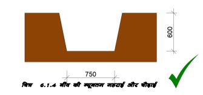

नींव की खुदाई



नींव की चौड़ाई को चिन्हित करने के लिए केंद्र रेखा
के दोनों किनारों पर खूंटियां लगाएं।
2. मिट्टी की गुणवत्ता की जांच करके, नींव की दीवार की
चौड़ाई के दोनों ऊर्ध्वाधर पक्षों को सुनिश्चित करें।
3. जमीन की सतह से ऊपरी मिट्टी और अन्य कचरा हटा
दें।
4. पानी की लेवल पाइप या स्पिरिट लेवल का उपयोग
करके नींव की सतह की समतलता और स्तर
सुनिश्चित करें।
भार वाहक संरचना

नींव में लगभग 12 सेमी मोटी 1:5:10 सीमेंट कंक्रीट बिछाएं और एक समतल सतह प्राप्त करने के लिए इसे अच्छी तरह से दुरमुट का उपयोग करें।
नींव की चिनाई के नीचे से प्रत्येक कोने में 12mm व्यास का 1सरिया खड़ा करें।
लगभग प्लिंथ स्तर तक सीमेंट मोर्टार में ईंटों या टूटे हुए पत्थर की चिनाई का उपयोग करके नींव का निर्माण करें।
नींव की चिनाई के चारों ओर की जगह को सावधानीपूर्वक मिट्टी की 100उउ मोटी परतों से भर दिया जाता है।
यदि भराव की मिट्टी सूखी हो तो पानी का छिड़काव कर उसे गीला कर देना चाहिए।
प्रत्येक परत को दुरमट का उपयोग करके ठोस बनाया जाना चाहिए। सुनिश्चित करें कि यह नींव की चिनाई को नुकसान न पहुँचाए।
नींव के दोनों किनारों पर तब तक मिट्टी भरें और दबाएँ जब तक कि आवश्यक ऊंचाई तक न पहुँच जाए, जो आम तौर पर आसपास के जमीनी स्तर से थोड़ी अधिक होती है।
उपलब्ध अतिरिक्त मिट्टी को प्लिंथ में भरा जा सकता है।
नींव का निर्माण
नींव का काम- नींव की खुदाईः
एक बार जब घर के नक्षे की केंद्र रेखा जमीन पर अंकित हो जाती है, तो नींव की चौड़ाई भी केंद्र रेखा के दोनों ओर अंकित हो जाती है।
हम ऐसी नींव का उपयोग करेंगे जो 75cm चौड़ी और 60cm गहरी हो। यदि जमीन में ढीली और कमजोर मिट्टी है, तो आपको बड़ी नींव का उपयोग करना पड़ सकता है, प्रभारी अधिकारी से परामर्श लें।
इस प्रकार हम नींव योजना को दिखाए गए अनुसार चिन्हित कर लेते हैं।
जमीन पर निशानों के अनुसार नींव खोदना शुरू करें।
खोदी गई मिट्टी को खाइयों से लगभग 45cm दूर ढेर करें ताकि वह वापस खाई में न गिरे।
नींव का कार्य:
जब नींव की खुदाई पूरी तैयार हो जाए, तो नींव के लिए चिनाई के प्रकार का चयन करें।
हम ईंटों या ठोस कंक्रीट ब्लॉकों में स्ट्रिप नीव का उपयोग करेंगे। यदि हम अधिरचना में सीमित चिनाई का विकल्प चुनते हैं तो हम तदनुसार नींव का चयन करेंगे।
चिनाई के लिए मिश्रण 1 भाग सीमेंट और 5 से 6
भाग रेत का उपयोग करें। प्लिंथ की ऊंचाई न्यूनतम
300mm रखें, लेकिन यह क्षेत्र में उच्च बाढ़ स्तर से
अधिक होनी चाहिए।
परतों में उपलब्ध खोदी गई मिट्टी से खाइयों को फिर
से भरें और कुएं को संकुचित करें।
मान लीजिए, हम ईंट चिनाई का चयन करते हैं क्योंकि इस क्षेत्र में उचित मूल्य पर अच्छी ईंटें उपलब्ध हैं।
सबसे पहले हम नींव की खाइयों के आधार को दुरमूट के द्वारा ठोस करेंगे।
फिर हम 40mm छोटे आकार के पत्थर का उपयोग करके सीमेंट कंक्रीट 1:4:8 की 10 से 15बउ मोटी परत बिछाएंगे। नींव की खाई के कुछ उतार-चढ़ाव पर आधार को समतल करने के लिए मोटाई अधिक हो सकती है। खाइयों में वापस मिट्टी डालकर कभी भी आधार को समतल न करें।
कोनो पर खडा सरिया यहीं से शुरू होंगे।
यहां दिए गए चित्र के अनुसार बेस कंक्रीट के ऊपर नींव में ईंट की चिनाई शुरू करें।
प्लिंथ स्तर से 75mm नीचे के स्तर पर पहुंचने पर, सरिये और सीमेंट कंक्रीट 1:1.5:3 का उपयोग करके चिनाई के शीर्ष पर 75mm मोटा आरसीसी प्लिंथ बैंड प्रदान किया जाता है। हर कोने पर खड़ा सरिया चिनाई से होकर गुजरता हैं और आरसीसी प्लिंथ बैंड से भी गुजरता हैं।
सभी दीवारों पर एक ही बार में आरसीसी प्लिंथ बैंड लगाया गया है।
आरसीसी बैंड में 12mm व्यास वाला सरिया उपलब्ध कराने का विवरण भूकंप सुरक्षा युक्तियों के अंतर्गत दिया गया है।
भूकंप से सुरक्षा के लिए
जोन सी अधिकतर भूकंप जोन प्ट में है। इसलिए हमें नीचे बताए गए आवश्यक उपाय बहुत सावधानी से करने चाहिए। ये उपाय वास्तव में घर की सभी दीवारों को आरसीसी बैंड द्वारा क्षैतिज और लंबवत रूप से बांधते हैं
नींव से छत तक प्रत्येक कोने और दीवारों के जोडो पर चिनाई वाली दीवारों में खड़ा 12mm का सरिया प्रदान किया जाता हैं। सभी दीवारें आरसीसी बैंड द्वारा क्षैतिज रूप से प्लिंथ स्तर, खिड़की सिल लेवल, दरवाजे के लिंटेल स्तर, छत स्तर और गैबल स्तर पर बिना किसी रुकावट के एक साथ बंधी हुई हैं। कोई भी इमारत जब इस तरह एक साथ बंधी होती है तो थोड़ी सी अतिरिक्त लागत पर काफी मजबूत भूकंपों का सामना कर सकती है।
आरसीसी भूकंप सुरक्षा बैंड:।
आरसीसी भूकंप बैंड में 12mm व्यास के दो सरिये लगाये जायेगें जोकि 6mm व्यास के सरिये से 200mm के अन्तराल पर रिंग द्वारा एक साथ जुड़े होते हैं। इन सरियो को चिनाई वाली दीवारों पर प्लिंथ, खिड़की की चौखट, लिंटेल, छत और गैबल स्तर पर रखा जाता है और 75mm मोटी 1:1.5:3 सीमेंट कंक्रीट में जोड़ा जाता है।।
आरसीसी बैंड में सरिये कोनों पर समाप्त नहीं होते हैं, सरिये साथ वाली दीवारों में लगभग 500mm तक मुड़ी होती हैं, हर कोने और दीवार के जंक्शन पर जैसा कि चित्र में दिखाया गया।।
कोनों पर छोटे बिंदु खडे़ सरिये की छड़ें हैं। देखें कि कैसे छड़ें कोनों पर आरसीसी बैंड से होकर गुजरती हैं।।
एक ही समय में सभी दीवारों पर आरसीसी बैंड लगाएं।।
सरिये लगाने की उपरोक्त जानकारी भूकंप से सुरक्षा के लिए बहुत महत्वपूर्ण है। यदि सरिये कोनों पर समाप्त हो जाते हैं तो वे कोई सुरक्षा नहीं देतीं।